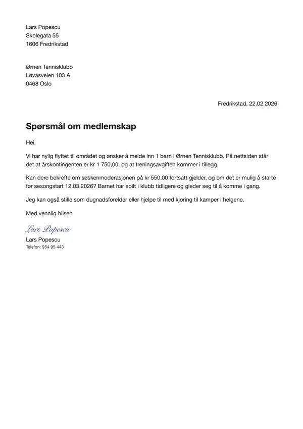
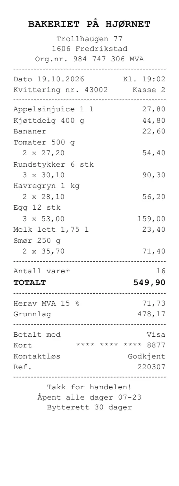
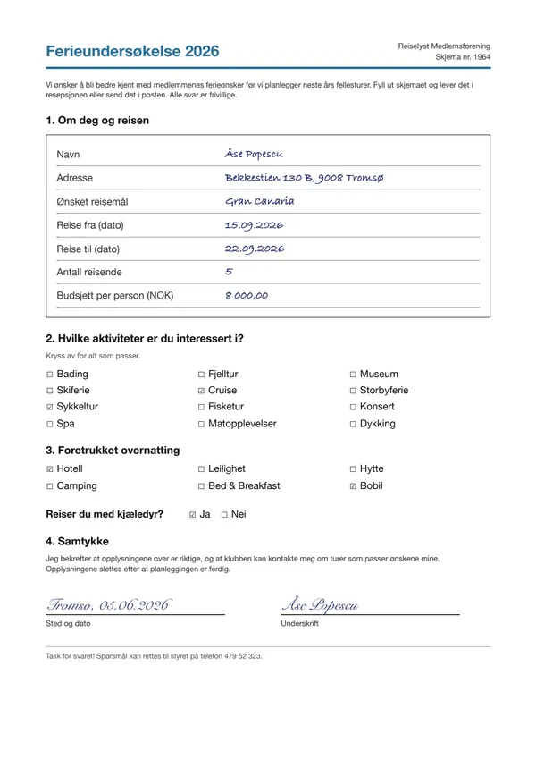
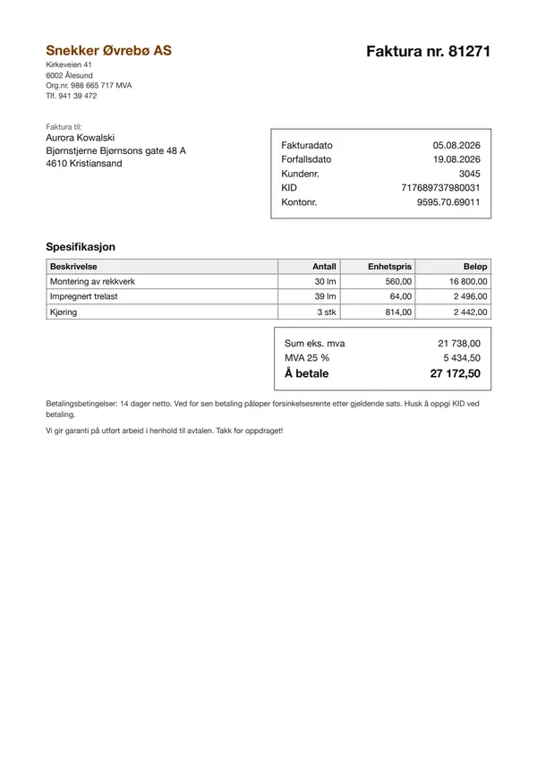
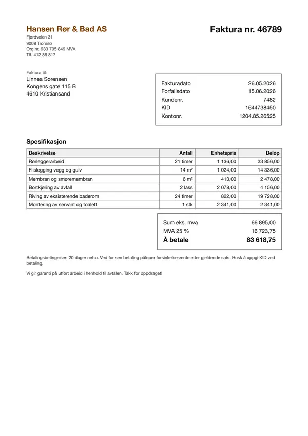
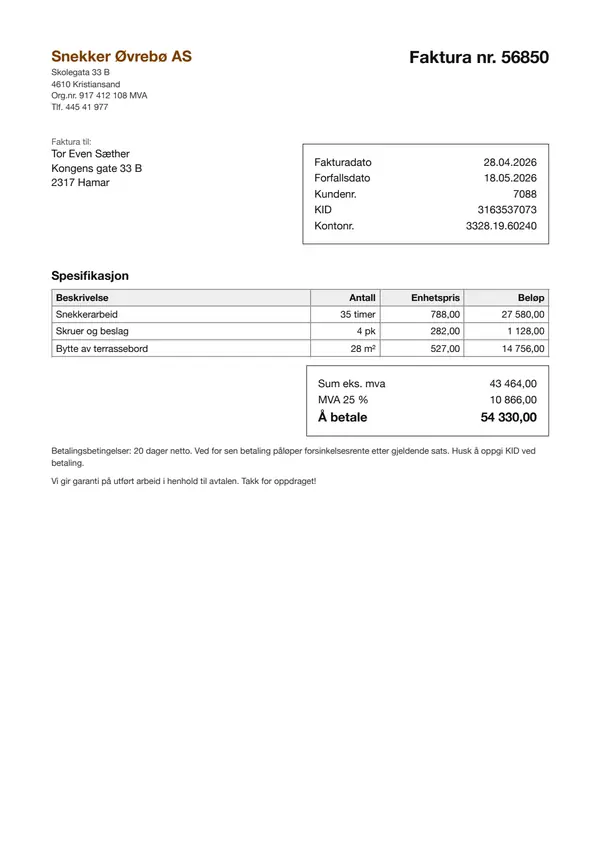
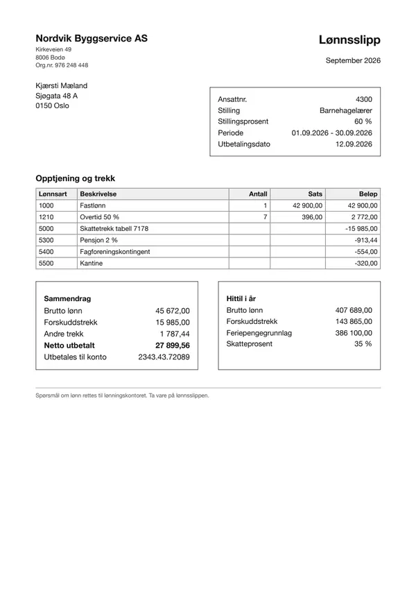
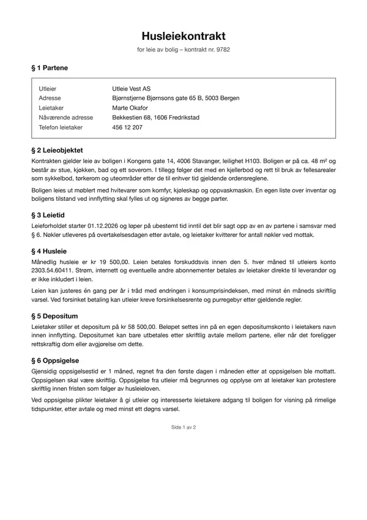
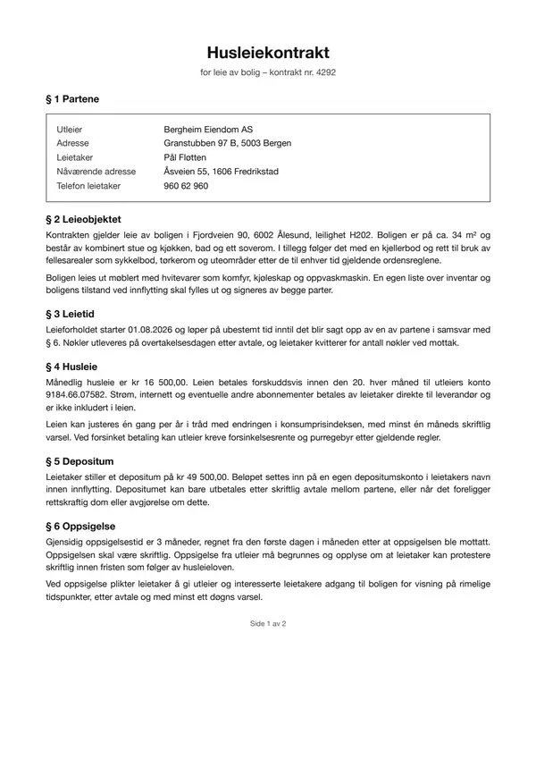

2026-10-09-ocr-vs-claude45
First benchmark: self-hosted Unlimited-OCR (GPU) vs Claude Sonnet 4.5 and Haiku 4.5, single requests and batch load (concurrency 1-32).
One experiment. New here? The main page explains what the benchmark does, what the pipelines and metrics mean, and the document types.
Key facts (computed, not LLM-written)
| question | clean pages | degraded pages |
|---|---|---|
| most accurate pipeline | page images → Claude Sonnet 4.5 (2025-09-29) (image->agent): 97.0% | page images → Claude Sonnet 4.5 (2025-09-29) (image->agent): 83.0% |
| cheapest pipeline | Unlimited-OCR text → Claude Sonnet 4.5 (2025-09-29) (unlimited-ocr->agent): $5.87/1k docs | Unlimited-OCR text → Claude Sonnet 4.5 (2025-09-29) (unlimited-ocr->agent): $5.88/1k docs |
| fastest pipeline | page images → Claude Sonnet 4.5 (2025-09-29) (image->agent): 3.4 s/doc | page images → Claude Sonnet 4.5 (2025-09-29) (image->agent): 3.6 s/doc |
Every pipeline (field accuracy, time per document, cost per 1,000 documents):
| pipeline | clean accuracy | degraded accuracy | s/doc (clean) | $/1k docs (clean) |
|---|---|---|---|---|
page images → Claude Sonnet 4.5 (2025-09-29) (image->agent) | 97.0% | 83.0% | 3.4 | $7.44 |
Unlimited-OCR text → Claude Sonnet 4.5 (2025-09-29) (unlimited-ocr->agent) | 95.7% | 81.5% | 9.0 | $5.87 |
| reader | variant | CER median | number recall | invented numbers (excl. runaway) | runaway pages | pages at token limit |
|---|---|---|---|---|---|---|
haiku-4.5 | clean | 0.033 | 99.3% | 3 | 0 | 0 |
haiku-4.5 | degraded | 0.081 | 87.1% | 124 | 1 | 1 |
sonnet-4.5 | clean | 0.002 | 99.8% | 2 | 0 | 0 |
sonnet-4.5 | degraded | 0.079 | 87.8% | 132 | 1 | 2 |
unlimited-ocr | clean | 0.006 | 99.5% | 1 | 0 | 0 |
unlimited-ocr | degraded | 0.043 | 90.8% | 85 | 0 | 0 |
| reader | p50 s/page (one at a time) | max pages/min (at concurrency) |
|---|---|---|
unlimited-ocr | 6.2 | 28 (32) |
sonnet-4.5 | 14.1 | 43 (16) |
haiku-4.5 | 8.0 | 137 (32) |
unlimited-ocr runs on its own GPU (ml.g5.xlarge), which costs $1.49/hour whether busy or idle; it handled at most ~1686 pages/hour in this run.
Pipeline costs that include unlimited-ocr use $0.89/1k pages: the cost at its best sustained throughput: 28.1 pages/min at concurrency 32 (GPU kept busy). One request at a time it would be $2.64/1k pages.
unlimited-ocris cheaper thansonnet-4.5transcription ($15.16/1k pages) above ~99 pages/hour sustainedunlimited-ocris cheaper thanhaiku-4.5transcription ($5.29/1k pages) above ~282 pages/hour sustained
Fields missed most often (count over clean + degraded documents):
- page images → Claude Sonnet 4.5 (2025-09-29) (
image->agent):newsletter.new_fee(10),rental_contract.property_address(6),holiday_survey.activities(5),holiday_survey.signed_date(5) - Unlimited-OCR text → Claude Sonnet 4.5 (2025-09-29) (
unlimited-ocr->agent):holiday_survey.activities(9),receipt.merchant(7),holiday_survey.accommodation(5),holiday_survey.pets(5)
Recommendation
LLM comment by opus-5.5 (anthropic.claude-opus-5-5) on the computed key facts. Check the numbers against the tables below.
Bottom line
Choose image->agent for production extraction: it is the most accurate pipeline on both clean (97.0%) and degraded (83.0%) pages and also the fastest. unlimited-ocr->agent is the cheapest at $5.87/1k docs, but only when its GPU is kept busy, and it gives up some accuracy.
What the facts say
- Both pipelines use the same extractor (Claude Sonnet 4.5), so the accuracy gap comes from the input. Sonnet 4.5 reading the page images beats it reading the
unlimited-ocrtranscript, even thoughunlimited-ocris a strong reader. - As a reader,
unlimited-ocrdoes best on degraded pages. It has the lowest CER median (0.043), the highest number recall (90.8%), the fewest invented numbers (85) and 0 runaway pages.haiku-4.5andsonnet-4.5each had 1 runaway page. Better transcription still did not produce better extraction. - The fields
unlimited-ocr->agentmisses most (holiday_survey.activities,holiday_survey.accommodation,holiday_survey.pets,receipt.merchant) look like layout or visual content. Checkboxes and logos tend to get lost when a page is flattened to text.image->agentmisses different fields (newsletter.new_fee,rental_contract.property_address), so the 2 pipelines fail in different places. - Degraded pages hurt every pipeline and every reader, and invented numbers rise sharply for all readers. Photo quality is the biggest risk to accuracy.
- The self-hosted model's cost advantage depends on load. The GPU costs $1.49/hour busy or idle. Its rate is $0.89/1k pages at full throughput but $2.64/1k pages one request at a time. It also adds latency:
unlimited-ocr->agenttakes 9.0 s/doc against 3.4 s/doc forimage->agent.
Choice by goal
| goal | choice | why |
|---|---|---|
| highest accuracy | image->agent | Most accurate on clean and degraded pages |
| lowest latency | image->agent | Fastest pipeline (3.4 s/doc clean, 3.6 s/doc degraded) |
| lowest cost | unlimited-ocr->agent | Cheapest ($5.87/1k docs clean), assuming the GPU stays busy |
| checking/second opinion | unlimited-ocr->agent | Different miss pattern and fewest invented numbers in its transcripts, so it is useful for cross-checking amounts |
| when to self-host | unlimited-ocr | Only with high sustained volume: it beats haiku-4.5 transcription above ~282 pages/hour and sonnet-4.5 transcription above ~99 pages/hour. It is capped at ~1686 pages/hour on this instance. |
Caveats
- The data is 48 synthetic Norwegian documents across 8 types. Real documents, other languages and other layouts may behave differently.
- The degraded pages are simulated phone photos. Real capture problems such as glare, folds or handwriting may hit the 2 inputs differently.
- Costs assume the stated prices and, for
unlimited-ocr, a fully used ml.g5.xlarge. Idle time or a different instance changes the cost ranking. sonnet-4.5->agentwas left out of the key facts because one model both transcribed and extracted. The comparison therefore covers only 2 pipelines with 1 extractor.
Setup
Models
| role | name in tables | model | model id | served by | temperature | price |
|---|---|---|---|---|---|---|
| transcriber (self-hosted) | unlimited-ocr | baidu/Unlimited-OCR @ 07dea832 | baidu/Unlimited-OCR | vLLM on SageMaker real-time endpoint | 0 | $1.49/hour (on-demand) |
| transcriber, extraction agent (default) | sonnet-4.5 | Claude Sonnet 4.5 (2025-09-29) | anthropic.claude-sonnet-4-5-20250929-v1:0 | OpenAI-compatible gateway | 0 | $3.0 in / $15.0 out per 1M tokens |
| transcriber | haiku-4.5 | Claude Haiku 4.5 (2025-10-01) | anthropic.claude-haiku-4-5-20251001-v1:0 | OpenAI-compatible gateway | 0 | $1.0 in / $5.0 out per 1M tokens |
| recommendation writer | opus-5.5 | Claude Opus 5.5 | anthropic.claude-opus-5-5 | OpenAI-compatible gateway | 1 | $4.0 in / $20.0 out per 1M tokens |
The extraction agent
The agent (default extractor) is Claude Sonnet 4.5 (2025-09-29) (anthropic.claude-sonnet-4-5-20250929-v1:0), temperature 0. It gets the document type's field list (name, type, one-line description), plus either the page images (image->agent) or the text transcript of every page, in order (<transcriber>->agent), and returns one JSON object with the field values copied verbatim; max 2,048 output tokens. It never sees the ground truth. It is the same model in every pipeline.
GPU
| instance | ml.g5.xlarge (picked from pools: ml.g6.xlarge, ml.g6e.xlarge, ml.g5.xlarge, ml.g5.2xlarge) |
| GPU | NVIDIA A10G, 24 GB |
| host | 4 vCPU, 16 GB RAM |
| price | $1.49/hour (on-demand), billed while the endpoint exists, busy or idle |
| region | eu-north-1 |
| host image | al2023-ami-sagemaker-inference-gpu-4-1 |
| container | docker.io/vllm/vllm-openai:unlimited-ocr (digest sha256:f86770951a9d) |
| serving flags | --trust-remote-code --logits_processors vllm.model_executor.models.unlimited_ocr:NGramPerReqLogitsProcessor --no-enable-prefix-caching --mm-processor-cache-gb 0 --max-num-seqs 64 --max-model-len 32768 --gpu-memory-utilization 0.90 |
| post-processing | strip_grounding |
Run
| plan | ocr-vs-claude45: First benchmark: self-hosted Unlimited-OCR (GPU) vs Claude Sonnet 4.5 and Haiku 4.5, single requests and batch load (concurrency 1-32). (9 transcription runs) |
| documents | 48 documents, 54 pages, 108 page images (clean + degraded), seed 7 |
| runner | fargate (2048 CPU units / 4096 MB) |
| code | git f3e57e7 (migrated from results/suite) |
| started | 2026-10-09T08:58:00 |
Transcription runs in this plan:
unlimited-ocrat concurrency 1sonnet-4.5at concurrency 1haiku-4.5at concurrency 1unlimited-ocrat concurrency 4unlimited-ocrat concurrency 16unlimited-ocrat concurrency 32sonnet-4.5at concurrency 16haiku-4.5at concurrency 16haiku-4.5at concurrency 32
Results
Speed and cost (stage 1)
| Backend | Model | Conc. | Pages | OK | Errors | Wall (s) | Pages/min | p50 (s) | p95 (s) | max (s) | Prompt tok | Compl. tok | Retries | $/1k pages |
|---|---|---|---|---|---|---|---|---|---|---|---|---|---|---|
| unlimited-ocr | baidu/Unlimited-OCR@sagemaker | 1 | 108 | 108 | 0 | 686.85 | 9.4 | 6.23 | 8.94 | 11.40 | 1 276 | 851 | 0 | $2.64 |
| sonnet-4.5 | anthropic.claude-sonnet-4-5-20250929-v1:0 | 1 | 108 | 108 | 0 | 1769.33 | 3.7 | 14.09 | 22.86 | 66.30 | 1 384 | 769 | 0 | $15.68 |
| haiku-4.5 | anthropic.claude-haiku-4-5-20251001-v1:0 | 1 | 108 | 108 | 0 | 899.57 | 7.2 | 7.95 | 12.73 | 31.42 | 1 384 | 696 | 0 | $4.86 |
| unlimited-ocr | baidu/Unlimited-OCR@sagemaker | 4 | 108 | 108 | 0 | 280.94 | 23.1 | 10.74 | 14.15 | 17.91 | 1 276 | 864 | 0 | $1.08 |
| unlimited-ocr | baidu/Unlimited-OCR@sagemaker | 16 | 108 | 107 | 1 | 275.42 | 23.3 | 33.43 | 41.44 | 43.46 | 1 279 | 856 | 0 | $1.07 |
| unlimited-ocr | baidu/Unlimited-OCR@sagemaker | 32 | 108 | 108 | 0 | 230.55 | 28.1 | 65.09 | 76.86 | 80.71 | 1 276 | 855 | 0 | $0.89 |
| sonnet-4.5 | anthropic.claude-sonnet-4-5-20250929-v1:0 | 16 | 108 | 108 | 0 | 149.60 | 43.3 | 14.29 | 22.73 | 56.88 | 1 384 | 700 | 0 | $14.65 |
| haiku-4.5 | anthropic.claude-haiku-4-5-20251001-v1:0 | 16 | 108 | 108 | 0 | 70.07 | 92.5 | 7.18 | 12.18 | 29.90 | 1 384 | 824 | 0 | $5.51 |
| haiku-4.5 | anthropic.claude-haiku-4-5-20251001-v1:0 | 32 | 108 | 108 | 0 | 47.41 | 136.7 | 7.02 | 12.16 | 29.02 | 1 384 | 825 | 0 | $5.51 |
Highlighted: best value per column within each concurrency level. Click a header to sort.
Transcription quality (stage 1)
| Backend | Variant | Pages | Coverage | CER mean | CER median | Runaway | Token limit | WER | Word recall | Word precision | Number recall | Numbers missing | Invented numbers |
|---|---|---|---|---|---|---|---|---|---|---|---|---|---|
| haiku-4.5 | clean | 54 | 100.0% | 0.038 | 0.033 | 0 | 0 | 0.059 | 97.5% | 97.4% | 99.3% | 3 | 3 |
| haiku-4.5 | degraded | 54 | 100.0% | 0.110 | 0.081 | 1 | 1 | 0.185 | 88.0% | 87.6% | 87.1% | 130 | 124 |
| sonnet-4.5 | clean | 54 | 100.0% | 0.028 | 0.002 | 0 | 0 | 0.031 | 99.6% | 99.0% | 99.8% | 1 | 2 |
| sonnet-4.5 | degraded | 54 | 100.0% | 0.160 | 0.079 | 1 | 2 | 0.207 | 91.9% | 87.8% | 87.8% | 132 | 410 |
| unlimited-ocr | clean | 54 | 100.0% | 0.012 | 0.006 | 0 | 0 | 0.037 | 97.3% | 97.1% | 99.5% | 2 | 1 |
| unlimited-ocr | degraded | 54 | 100.0% | 0.075 | 0.043 | 0 | 0 | 0.178 | 85.6% | 87.0% | 90.8% | 135 | 85 |
Highlighted: best value per column within each variant. Click a header to sort.
Field extraction (stage 2)
| Input → extractor | Pipeline id | Variant | Docs | Coverage | Field accuracy | Correct | Total | Extractor latency (s) | End-to-end (s) | $/1k docs |
|---|---|---|---|---|---|---|---|---|---|---|
| page images → Claude Sonnet 4.5 (2025-09-29) | image->agent | clean | 48 | 100.0% | 97.0% | 319 | 329 | 3.42 | 3.42 | $7.44 |
| page images → Claude Sonnet 4.5 (2025-09-29) | image->agent | degraded | 48 | 100.0% | 83.0% | 273 | 329 | 3.57 | 3.57 | $6.75 |
| Unlimited-OCR text → Claude Sonnet 4.5 (2025-09-29) | unlimited-ocr->agent | clean | 48 | 100.0% | 95.7% | 315 | 329 | 2.17 | 8.97 | $5.87 |
| Unlimited-OCR text → Claude Sonnet 4.5 (2025-09-29) | unlimited-ocr->agent | degraded | 48 | 100.0% | 81.5% | 268 | 329 | 2.18 | 9.68 | $5.88 |
Highlighted: best value per column within each variant. Click a header to sort.
Documents (48)






















